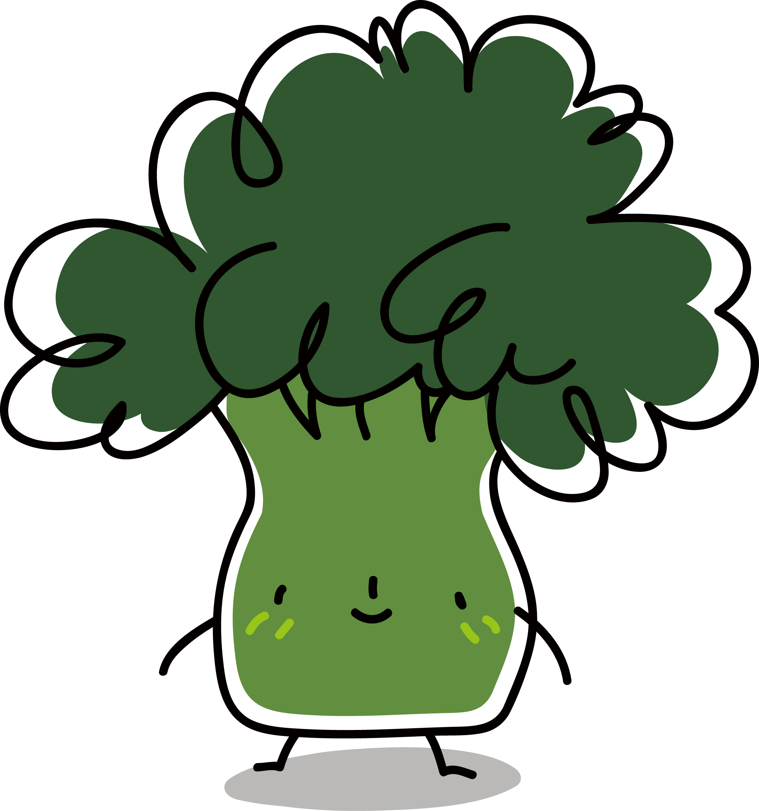

Food Production
-

- 
-

The Uk collectively thows away 13 billion tons of food each year, food which is often sourced from further away isntead of locally. Furthermore, the meat we consume and throw away high ecological impacts, with meat such as beef needing 160x more land than staples like potatoes and rice, as well as producing 11x more greenhouse gases. Here are some actions regarding food consumption you can take if you want to be more sustainable!